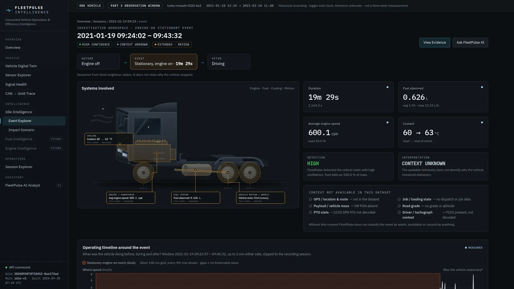
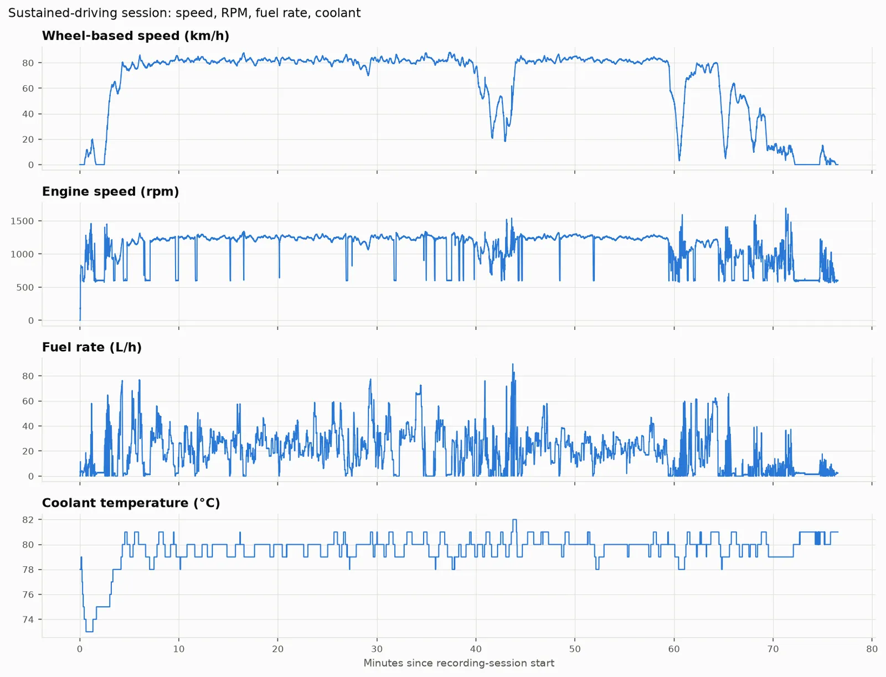
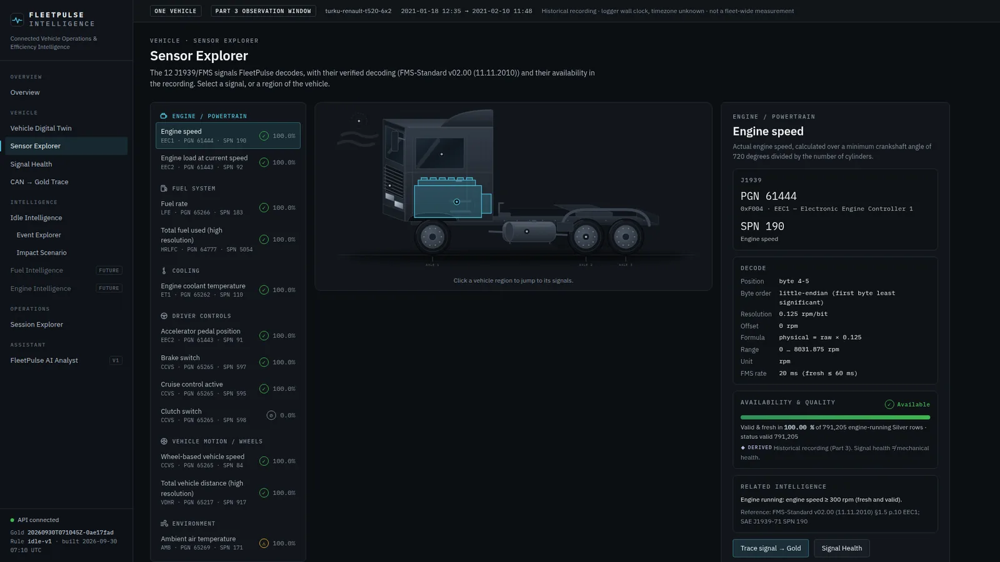
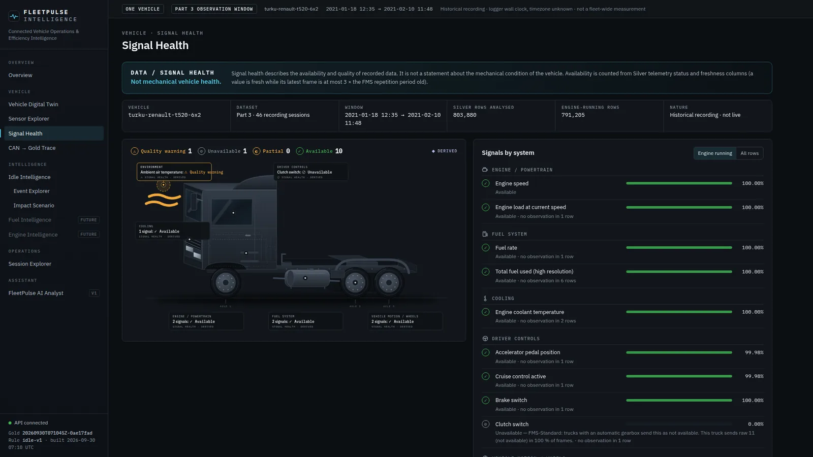
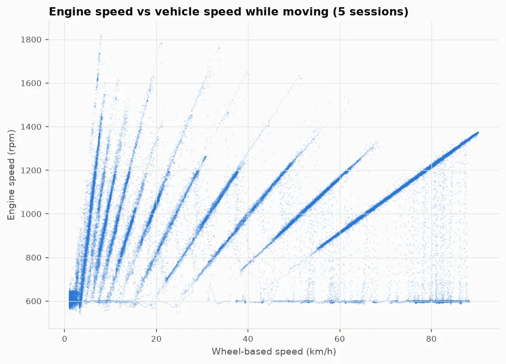
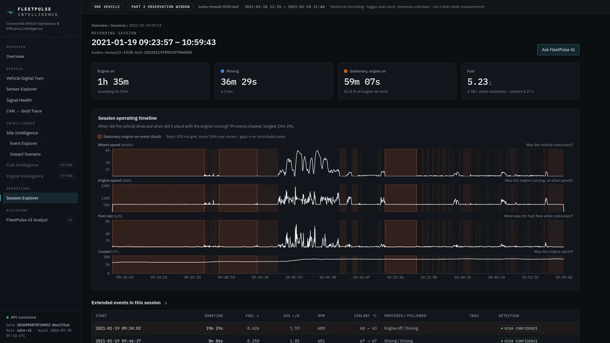

FleetPulse Intelligence
A truck's CAN bus sends thousands of binary frames every second. Fleet teams can't read that data, and they can't trust numbers they can't trace back to a source.
An end-to-end platform: J1939 decoding, a PySpark Bronze → Silver → Gold lakehouse, FastAPI, a React dashboard, and an AI analyst that only explains validated evidence.
68M frames processed · fuel within 0.2% of the truck's own counter · 880 idle events found · 409 automated tests.

Raw CAN is noise.
Binary payloads, gaps, stale signals. I built the layers that make it readable.
Every number traces to a real frame.
Dashboard value → Gold → Silver → raw bytes → source file and line.
Signals mapped onto the truck.
Click a system and see its decoded J1939 signals.
8.33 h stationary with engine on.
Found in the data, not guessed: 880 events and 19.6 L of fuel.
FleetPulse computes. The LLM explains.
Every number the AI states is validated against the evidence.
Architecture
Decode a real CAN frame.
From the build





